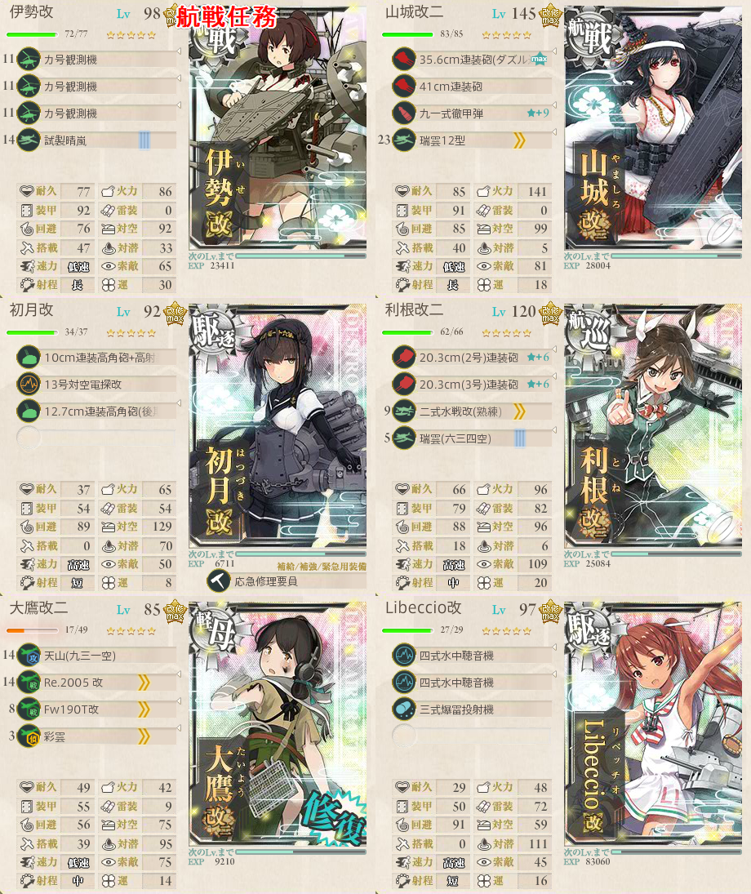

【艦これ】1-6 鎮守府近海航路【マンスリー】
1-6 鎮守府近海航路 攻略メモ
編成
南ルート
- 軽巡1駆逐5
- AEGFBN
- 対空カットイン艦がいると良い
- 航空戦マスは夜戦に行かないと確定敗北
- 敗北数を増やしたくない場合は夜戦するか別編成で北ルートに行く
- あるいは由良改二を利用する手もある
強行輸送艦隊、抜錨！
- CHKMLID
- 航空戦艦または補給艦を２隻入れる必要がある
- 補給艦で南ルートに入れるなら一考の価値はあるが、そうでなければ航空戦艦一択
- 北ルートには航空戦マスと対潜マスが２つずつあり、大鷹を使ってくれと言わんばかり

伊勢を対潜に振り切っているが、対水上戦闘用の装備にしても問題ない
- Kマスを考慮するとそのほうが安定するかも？
利根に制空権補助で水戦を載せているが、やや過剰な感じもする
- 熟練整備員で火力を伸ばしても良い
また、四航戦任務でもNマス到達が要求される
そちらは伊勢日向に加えて大淀、駆逐1が固定になっている
上記編成の利根を大淀にするだけでも良さそう
敵編成
| マス | 編成 | 備考 |
|---|---|---|
| C | 潜水艦のみ | |
| K | 重巡 戦艦 軽巡 駆逐 | 戦艦がいるかどうかはランダム |
| L | ヲ級 ヌ級 ツ級 駆逐 | 航空戦 |
| I | 潜水艦のみ | |
| D | ヲ級 ヌ級 ツ級 駆逐 | 航空戦 |